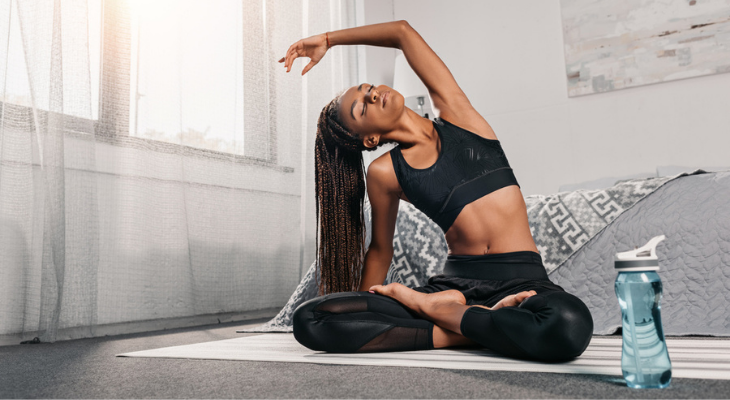
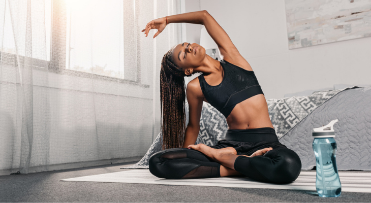

Mindfulness: Cultivating Mental Clarity and Focus
Psychological health preservation is as important as looking after physical health, yet it gets relegated behind the grind of everyday existence. Building stress, anxiety, and overthinking drains the energy level out of a human and reduces the level of living.
Mindfulness is one of the greatest gifts to the mind. It is simply the act of being in the present moment without judgment. It is the focus on the here and now by forgetting about the past and the future.
Here are a few ideas for practicing mindfulness:
- Start your day with intention: Before jumping into your normal routine, take a few moments to develop an intention for the day. An intention can be as simple as "Today I will live with gratitude" or "I will remain calm at times of stress."
- Pranayama: Deep breathing activates the parasympathetic nervous system, calming one’s mind and reducing stress. Follow 4-7-8 counting breaths. Inhale for 4 counts, hold for 7, exhale completely for 8.
- Mindful activities: Walking, eating, even dishwashing; but whatever activity you're doing, try to immerse yourself completely into that while avoiding distractions. Any activity of this sort certainly trains the brain to focus itself on living in the moment.
When and how often should I practice mindfulness exercises?
It depends on what kind of mindfulness exercise you plan to do. Simple mindfulness exercises can be practiced anywhere and anytime. Research indicates that engaging your senses outdoors is especially beneficial.
For more structured mindfulness exercises, such as body scan meditation or sitting meditation, you'll need to set aside time when you can be in a quiet place without distractions or interruptions.
 

.jpg)